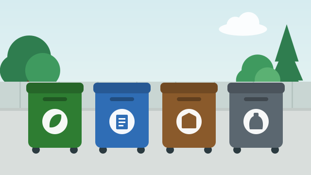
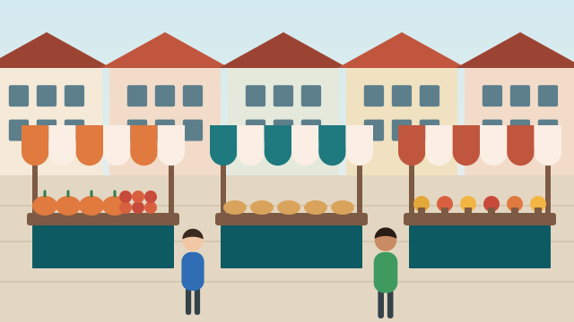
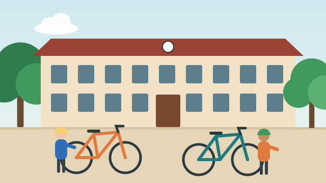
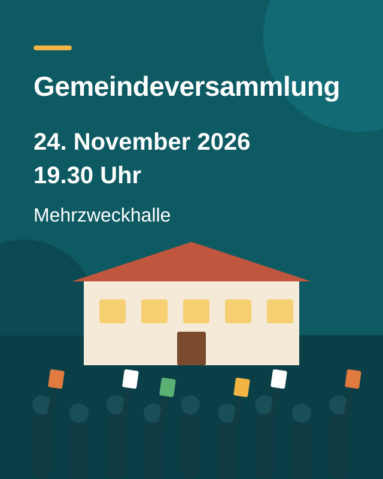

Neue Schalteröffnungszeiten ab 1. November
Die Gemeindeverwaltung ist neu am Donnerstagabend bis 18.30 Uhr geöffnet. Dafür bleibt der Schalter am Mittwochnachmittag geschlossen.
Lebendige Gemeinde zwischen Aarenwald und Seeufer – und rund um die Uhr online für Sie da.
Die Gemeindeverwaltung ist neu am Donnerstagabend bis 18.30 Uhr geöffnet. Dafür bleibt der Schalter am Mittwochnachmittag geschlossen.

Ab November holen wir das Grüngut nur noch alle zwei Wochen ab. Bitte beachten Sie die neuen Daten.

Über 40 Stände mit regionalen Produkten, Handwerk und Kürbissuppe – dazu spielt die Dorfmusik Musterwil.

Bringen Sie Velo oder Trottinett am 31. Oktober zum Werkhof: Wir prüfen Bremsen, Licht und Reifen kostenlos.
Ob Identitätskarte, Wohnsitzbestätigung oder Hundemarke: Die Gemeindeverwaltung an der Dorfstrasse 1 ist Ihre erste Anlaufstelle. Viele Dienstleistungen erledigen Sie rund um die Uhr am Online-Schalter; die neuen Öffnungszeiten unserer Schalter gelten ab 1. November 2026.
Alle Termine der Grüngutabfuhr finden Sie im Abfallkalender – mehr.
Samstag, 9 bis 16 Uhr. Regionale Produkte, Handwerk und Kürbissuppe; um 11 Uhr lädt der Gemeinderat zum Apéro.
Mittwoch, 18 Uhr, Start beim Schulhaus Moosmatt. Anschliessend offeriert der Elternverein heissen Punsch.
Dienstag, 19.30 Uhr, Mehrzweckhalle. Traktanden: Budget 2027 und Sanierung Schulhaus Moosmatt.
Freitag, 18 Uhr. Das erste Adventsfenster öffnet sich im Café du Lac an der Seestrasse 3 – mit Glühwein und Lebkuchen.

Quelle: Statistik der Bevölkerung und der Haushalte, Office fédéral de la statistique (OFS), Stand 31. Dezember 2025.